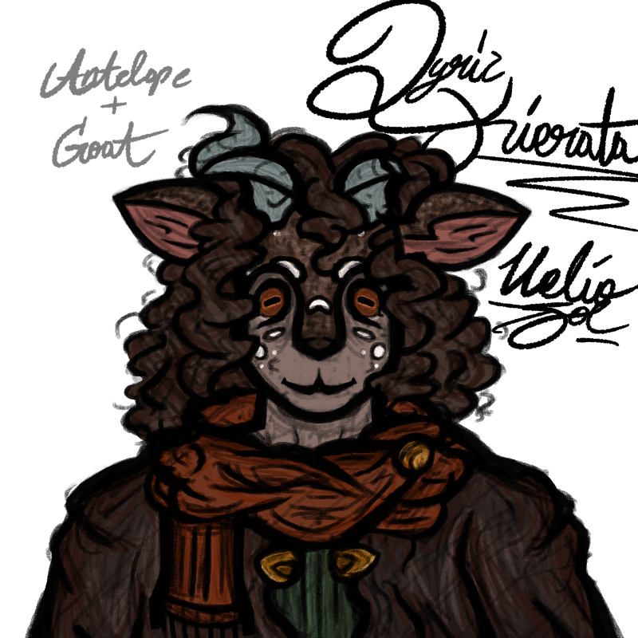

Lyric Kierata
I could only lead you so far. I believe in who you are.
— Fish in a Birdcage,
Rule #9 - Child of the Stars
lyric
| LYRIC KIERATA | |
|---|---|
 |
| NAME | Lyric Kierata |
|---|---|
| CREATOR | HelioSOL |
| VOICE | Thom Yorke - Radiohead |
| SPECIES | Prey Terrestrial |
|---|---|
| BIRTH | N/A |
| GENDER | Male |
| SEXUALITY | Bisexual |
| HEIGHT | 8'0 |
| AFFILIATION | Prey Nomads |
|---|---|
| RELATIVES | Axia Kierata Unnamed Daughter |
| RELATIONSHIPS | N/A |
Biography
Acts as a father figure toward his younger brother, since they lost their father when Axia was 5. He had to take responsibility so his brother would be safe.
Tends to be seen as a leader figure by whatever group he's with at the time, so he takes care of them provides.
Had a daughter with his partner of 7 years and planned on having another child, but died before they were born.
Owns the axe that's been passed down through his mother's side of their family, and passed it to his daughter as well. He gave his father's dagger to Axia.
Was taught a lot about survival by their father and learned the rest on their own after he died. They taught all they could to Axia, too.
Moves around a lot with Axia, both by preference and necessity.
(WILL CHANGE LATER)
evil cider.....